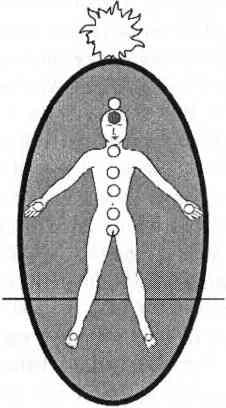

ALTINCI ÇAKRA ÜÇÜNCÜ GÖZ ÇAKRASI
Bu parlak çivit mavisi, kabul edici çakra alnımızın ortasında iki kaşınızın birleşme noktasıyla saçlarınızın başladığı yerin tam ortasındadır. Hipofiz bezi ile bağlantılıdır. Altıncı çakra geleceği görebilmenin ya da görülebilir enerji titreşimleri merkezidir. Birileri sizinle psişik olarak temasa geçtiğinde durugörü merkezi olan altıncı çakra genellikle birinci çakrayı uyarır. Çoğunlukla son derece aktif ve hayat doludur. Altıncı çakra aynı zamanda, idrak, muhakeme etme, mantıklı hüküm verme merkezidir ve öğrenme, bilgi toplama, bilgi işleme gibi üst beyin fonksiyonlarını da yönetir.

Altıncı çakra enerjisi, altındaki çakraların topraklanmış, duygusal, koruyucu, empatik ve kendini ifade edebilen enerjilerine, odaklanmış bilinçle katkıda bulunur. Altıncı çakranın desteğiyle, kim olduğunuz, yaşam yolunuz ve başkalarının gereksinimleri konusunda belirginlik elde edersiniz. Bu belirginlik farkındalık sahibi olmayan kişilere ya da kalp çakrası özelliklerine bağımlı kişilere soğuk ve mesafeli gelebilir. Altıncı çakralar her şeyi olduğu gibi görürler; görünmeye çalıştıkları gibi değil, olmayı istedikleri gibi değil, sadece oldukları gibi.
Sağlıklı ve farkında altıncı çakranız, hayallere göre değil, gerçeklere göre karar almanızda size yardımcı olur. Altıncı çakranın duygusallıktan arınmış kesinliğinin, sağlıklı beşinci çakranın kararlı iletişimi ve harekete geçme kabiliyetiyle birleşmesi, bir şey yapmak yerine mazeret uydurmayı tercih eden insanlara huzursuzluk verir.
Kalp çakrası kendisinin ya da başkalarının acısını gördüğünde kendi açısından empati, şefkat, sevgi ve şifaya geçer. Altıncı çakra kendisinin ya da başkasının acısına farklı bir açıdan bakar; sadece acıyı değil acının ardındaki sebepleri görür. Acının sağladığı rahatın derecesini ve acıya ne kadar süredir izin verilmekte olduğunu görür. Acı sayesinde arkadaşların ya da aile bireylerinin dikkatinin nasıl çekildiğini ve acıyı yaratmak için ne kadar çaba sarf edildiğini görür. Aynı zamanda acıdan kurtulmanın istenip istenmediğini de sorgular. Altıncı çakra, duygusal dördüncü çakranın sinir bozucu, baltalayıcı ya da sevgisiz olup olmadığı yolunda sürekli olarak soru sorar.
Bu sorgulama sırasında, duygusallıktan arınmış ve hakikati aramakla görevli altıncı çakra, her ikisi de üçüncü ve dördüncü çakra farkındalığından gelen kurban olma bilincini ve içimizdeki çocuk mesaisini desteklemeyi, yüceltmeyi ve takdir etmeyi reddeder. Altıncı çakra enerjisi, çocukluk travmalarına bağlı olarak ya da hastalıklı yetişkin seçimleriyle kurban rolünü oynamaya devam etmek isteyen kişileri tehdit eder. Altıncı çakra enerjisi kurban rolüne karşı son derece hoşgörüsüzdür.
Bu yüzden pek çok kişi kendi gerçekleriyle yüzleşmemek ya da hayatlarına girmesine izin verdikleri insanlar hakkında gerçeği öğrenmemek için altıncı çakralarını kapatır. Altıncı çakrayı kapamak aynı zamanda kişinin hayat amacını da bulanıklaştırır. Kapalı altıncı çakra insanları, iş ve ilişki sorumluluklarını da düşünmek zorunda değildirler. Bu, rahatlayıp gevşeyebilecekleri bir zaman dilimini yaratır; çünkü her ne pahasına olursa olsun gerçeği bilmek isteyen, sorgulayıcı altıncı çakranın kapatılması az da olsa huzura ve sükunete kavuşmayı sağlayabilir.
Altıncı çakrayı kapatmanın yarattığı asıl sorun, günlük hayattaki olaylarda iyi ve kötüyü ayırt etme yeteneğinin de kapatılmasıdır. Altıncı çakrası kapalı kişiler aylar ya da yıllar boyunca büyük spiritüel sorular değil günlük hayatın küçük sorularının bile cevabını bilmeden yuvarlanıp giderler.
Garip ilişkiler yaşar ve nereye gittiği belli olmayan işlerde çalışırlar. Ne yapmak istediklerini ya da neler hissettiklerini bilmezler. Bir yerden diğerine, bir fikirden bir başkasına arada hiç mantıklı bir bağ olmadan sürüklenirler. Bir amaçları hatta daha iyi bir hayata dair tek bir hayalleri bile yoktur. Altıncı çakraları kapalı insanlar unutkan ve güvenilmez olurlar. Bilgiyi kullanmakta zorlanırlar. Hatta yorumlama ya da yazmada zorlanırlar ve aniden söyleyecekleri fikri ya da sözcüğü unutuverirler. Tüm bu arazlar altıncı çakralarını açtıkları zaman ortadan kaybolur.
Altıncı çakrayı yeniden açmak hiç şüphesizki kişisel cesaret gerektirir. Altıncı çakrası uzun bir süre kapalı olan kişi yoldan çıkmaya yatkındır. Açıldığı anda zor sorular peş peşe sıralanmaya başlar: “Burada ne yapıyorsun? Niçin bedenin böyle görünüyor? Neden böyle hissediyor? Güzelliklere ve hayallerine ne oldu? Bu garip insanlar da kim? Allah aşkına burada neler oluyor?” Eğer mazeretiniz, bir açıklamanız ya da bir cevabınız yoksa o zaman kendinizi kutlayın! Demek ki evin yolunu buldunuz.
Altıncı çakraların güzel olan (ya da korkunç olan, nasıl baktığınıza bağlı) yanı bütün bu sorulara cevap vermenin gerekmemesidir; sadece kabullenilme, işleme koyulmalı ve harekete geçilmelidir. Altıncı çakra soruları kişileri genellikle aptallaşmış ve dilleri tutulmuş hale sokar. Altıncı çakra insanı, birinin kolundaki ya da belindeki ağrıya bakıp aniden “Anneni ilk kez ne zaman boğmak istedin?” ya da “Kaç kişinin duygusal sorunlarını sen taşıyorsun?” gibi şeyler sorabilir.
Altıncı çakradan gelen bilgi, kendi tarzında tuhaf bir rahatlama sağlasa da, saçmalığa parmak bastığı için genellikle şaşırtıcıdır. Eğer saçmalığı kendi sağlığınızdan daha fazla seviyorsanız ne kendiniz ne de çevreniz için altıncı çakra enerjisi istersiniz. Eğer sağlığınıza ve mutluluğunuza değer veriyorsanız altıncı çakra enerjisi en iyi dostunuz olacaktır.
KAPALI YA DA AÇIK ALTINCI ÇAKRA
Dengesiz bir çakra sisteminde ardına kadar açık (13 santimetreden büyük) altıncı çakra çılgınca vizyonlardan ve capcanlı rüyalardan, zıt fikirler arasında deli gibi çalışan bir beyne kadar sayısız soruna yol açar. Çok açık altıncı çakralar beyne çok enerji yükleyerek tikler, keskin sancılar, migrenler ve nöbetler yaratabilir. Altıncı çakranın kontrolsüz enerjisi nedeniyle gözlerde de bulanıklık, yorgunluk ya da alerji olabilir. Sonuna kadar açık bir altıncı çakra kafanızın içindeki odayı da gürültülü ve içinde durulamaz bir hale getirir.
Altıncı çakra genellikle diğer çakralar çalışmaz durumda olduğunda çok açılır. İkinci çakra hizadan çıkmış ve başkalarının enerjisini sünger gibi emiyor olduğunda, altıncı çakra iyiyi kötüden ayırt edecek enerjiyi sağlayabilmek için sonuna kadar açılır. Ancak emicilik, topraklanmayı o kadar engelleyicidir ki altıncı çakra da kısa zaman sonra çalışmaz duruma gelir.
Üçüncü çakra aurayı korumadığında da altıncı çakra sonuna kadar açılır. İlk elden psişik korunma sistemi olarak çalışıp kimin iyi kimin kötü olduğunu anlamaya çalışır. Ancak üçüncü çakranın koruyuculuğu olmadan altıncı çakra yakından incelenmek istemeyen insanlar tarafından tokatlanacaktır.
Dördüncü çakra kaçak şifacı olarak bütün kalp enerjisini kullanırken altıncı aynı işleri yapabilmek için açılarak bir “mutlu sünger” dakikası sağlayabilir. Kalp, ruh ve bedeni birleştirmekten aciz olduğu için bütün sistem dengesiz ve topraksız kalacaktır. Buna ek olarak sağlıksız kalp çakrası kontrolü ele geçirmek için altıncı çakra ile savaşacak (Benim şifam seninkinden iyidir!) ve iki savaşan devlet arasında kalan beşinci çakra ezilecektir.
Bunu yazarken, çakralarınızın sizin farkındalığınızın sembolleri olduğunu ve bütün eylemlerini sizin farkındalığınızın yönlendirdiğini hatırlatmak isterim. Eğer dördüncü ve altıncı çakralarını arasında savaş varsa siz empatik yetenekleriniz ile iyiyi kötüden ayırt etme yetenekleriniz arasındaki bu savaşı bizzat başlatmışsınız demektir. Çakralarını sadece size bu ihtilafı gösterme görevini yapıyorlar; sizden bağımsız olarak çalışmıyorlar. Lider sizsiniz, onlar da sizin peşinizden gelirler. Çakralarınızı tedavi edebilir, savaşan bütün yanlarınızın kontrolünü yeniden sağlayabilirsiniz. Bunu yaptığınız zaman sağlıklı çakra sisteminiz sizi her şekilde destekleyecek ve dengenizi korumanıza yardım edecektir.
Dengesiz ve çok açık bir altıncı çakrayı elinizden geldiğince çabuk kapayın ve bütünlüklü bir çakra sistemi tedavisi uygulayın. Açık bir altıncı çakranız varsa sisteminizde dengesizlikler vardır. Size rağmen sizi hayatta tutmaya çalıştığı için altıncı çakranıza teşekkür edin. Altıncı çakranızın psişik iletişimin temel çakrası olduğunu unutmayın. İnsanlar sizinle iletişime geçmek, sizi tanımak ya da sizden bilgi almak için altıncı çakranız- la temasa geçerler.
Eğer altıncı çakranız ardına kadar açık ve korunmasızsa; dengesiz bir çakra sisteminde bulunuyorsa, bu tür psişik temaslar son derece kaygı verici olabilir. Alın kısmında baş ağrıları çekebilir; vizyonlar görebilir; düşünmekte ve konsantre olmakta zorluk çekebilir; uykusuzluk sorunları yaşayabilirsiniz çünkü altıncı çakranızda dışarıdan gelen çok fazla enerji vardır. Altıncı çakranızı örtün ve çakra sisteminizi tümüyle tedavi ettikten sonra bile, altıncı çakranızın önüne ve arkasına altı yedi tane topraklanmış nöbetçi dikin. Bu, altıncı çakranızın merkezde, hizada kalmasına yardım edecek ve daha önce ellerini kollarını sallayarak içeri buyur edilen insanların, enerjilerin tekrar geldiklerinde kapıyı çalmalarını sağlayacaktır. Özel yüz bakımı armağanı “İleri Teknikler bölümünde anlatılmıştı” enerjiyi yüzünüzden, gözlerinizden ve altıncı çakranızdan çekmeye yardımcı olur. Deneyin.
Sağlıklı ve topraklanmış bir çakra sisteminde altıncı çakra hayat yolunuz ve sezgisel yeteneklerinizden bilgi almak için açılır. Altıncı çakra aynı zamanda beynin spiritüel iyileşmesi için de açılır. Size kafanızın içindeki odada altıncı çakranızı yakından izlemenizi öneririm. Çok sağlıklı bir sistemde bile çok açık bir altıncı çakra çevrenizdeki psişik malzemenin ilgisini çeker. Altıncı çakranın sağlıklı bir şekilde açılması o kadar heyecan verici, o kadar devrim niteliğinde bir durumdur ki, arkadaşlarınız ya da aileniz bunu sizinle paylaşmak ister. Hepsinin niyeti de iyidir; ancak dikkatleri ve odaklanmaları sizi hem fiziksel hem de spiritüel olarak kötü etkileyebilir.
Altıncı çakra doğrudan beynin içi olduğundan, enerji çeken açıklığı sadece durugörü yeteneğinizi değil, aynı zamanda düşünsel becerilerinizi de kötü yönde etkileyebilir. Ben altıncı çakramın çok açılmış halde kalmasına en fazla iki ya da üç gün izin veririm. Şayet uzun süreli huzur ve sükunet içinde yaşayacağınız bir sığınağınız yoksa, altıncı çakranızı üç günün sonunda normal boyutuna indirin. Ellerinizi kullanarak 3 ila 5 santimetrelik çapa getirebilir ya da fotoğraf makinesi objektifi gibi kapandığını hayal edebilirsiniz.
Şayet huzurlu, sakin bir yeriniz varsa, oraya gidin ve altıncı çakranızı bir hafta süreyle açık tutun. Çevrenizdeki insanların engellemeleri olmadığında, altıncı çakranızı tamamen açarak durugörü yeteneklerinizi güven içinde kullanabilirsiniz. Aksi durumda, her çakranızın önüne koruyucu bir nöbetçi yerleştirin; altıncı çakranızın önüne ve arkasına da, yeniden normal boyutlarına çekeceğiniz ana kadar, en az altı tane topraklanmış nöbetçi koyun.
Dengesiz bir sistemdeki kapalı altıncı çakra, spiritüel durugörü bilgisine ve aklın daha normal muhakeme edecek işleyişine kapalı olmanın göstergesidir. Tahmin edebileceğiniz gibi bu da bilinçli bir hayatı imkansız kılar. Hatta daha katlanılabilir hayat yolunu kapayarak bilinçaltında intihara sürükler. Tabii bir süre için.
Benim açık altıncı çakram şöyle der; Sana ait olmayan her yol tehlikelidir! Seni beslemeyen her ilişki, her seçim ya da fikir seni tüketir. Mutluluk sadece sen tamamen kendinden memnun olduğun ve utanmadığın zaman mevcuttur. Hayatını kendin gibi yaşamalı, mazeret uydurmamalısın yoksa manasız bir acı içinde yaşar ve ölürsün.
Eyvah! Empatik dördüncü çakram deliye döndü! Herkese ve her şeye izin vermek, yoldan çıkmak için ters taklalar atıyor. Ama altıncı çakram kapı gibi yerinde duruyor.
Bu birbiri ile iletişim halindeki bir çakra sisteminde sürüp giden konuşmalara ilginç bir örnektir. Her çakra uyandığında ondaki bilgi bütüne eklenir. Eklenen bilgi kimi zaman diğer çakralar tarafından anlaşılır, kimi zaman da anlaşılmaz. Bizim görevimiz çelişkili gibi görünen bilgilerin ortasında sistemi dengelemektir.
Gerçekte dördüncü ve altıncı çakralar aynı işi yaparlar. Dördüncü çakra daha az gelişmiş ya da daha az akıllı değildir. Hiç çekincesi olmayan altıncı çakradan gelen bilginin doğru olduğunu bilir ama içinde barındığı yarı beden yarı ruh konumundan bakarak, spiritüel gerçeklik kadar sade olmayan fiziksel gerçekliği de görebilir. Bütün olmaya çalışan insanların yaşadığı aşırı gayreti görüp onlarla empati kurar. Dördüncü çakra insanların nereye yönlendiklerini; spiritüel belirginliğe doğru gittiklerini görür ama bu gezegendeki hayatın zorluklarını da bilmektedir. Onun ruh merkezli altıncı çakradan çok daha fazla sabrı vardır.
Dördüncü ve altıncı çakralar rahatça iletişim kurduğunda (sağlıklı ve bölünmemiş beşinci çakra aracılığıyla) dördüncü çakra yoldan çıkmış davranışlarıyla ilgili daha az mazeret uyduracaktır. Böylece altıncı çakra surat asmayı bırakacak ve daha yumuşak bir şekilde rehberlik edecektir. Denge, ancak altıncı çakra açılmaya ve yeniden yaşamaya karar verirse sağlanabilir.
İlk başlarda yeni açılmış altıncı çakranın iletişimi rahatsız edici olacaktır. Ancak düzenli olarak uygulanan tedavilerle; topraklanma kordonuyla, aurayla ve ayırma araçlarının kullanımıyla bütünün içinde dengeli konumunu bulacaktır.
Şimdi de altıncı çakranın daha dengeli bir bakış açısından yolladığı mesaja bakalım: Sana ait olmayan her yol, şayet kim olduğunu hatırlamazsan tehlikeli olabilir. Ancak farkında olduğun sürece her yolun bir anlamı ve vereceği ders vardır. Seni beslemeyen her ilişki, iş, seçim ya da fikir senden beslenir ve kimi zaman yükünü hafifletip, yolculuğundaki bir sonraki adımı kolaylaştırabilir. Mutluluk sadece sen tümüyle kendin olduğun, kendin olmaktan hiç utanmadığın zaman varolur; bu da zaman, destek, çalışma, güven ve sevgi ile sağlanır. Hayatını kendin olarak yaşamalı, kendin için ya da bir başkası için mazeretler uydurmayı bırakmalısın yoksa hiç yaşamadan ölürsün.
Karanlıkta geçen bir dönemden sonra, altıncı çakranın açılması işlemi hayatınızdan ve sorumluluklarınızdan birkaç gün uzaklaşmanızı gerektirebilir. Altıncı çakrayı başarıyla açmak, hayatınızı ve sorumluluklarınızı değiştirmenizi de gerektirebilir. Sağlıklı altıncı çakra insanlarının desteğine ihtiyacınız olabilir, çünkü bu kendi başınıza kat edeceğiniz zevkli bir yol değildir. Çevrenizde rüyaları, bireyselliği ve spiritüel amacı destekleyen kişilere ihtiyacınız vardır. Hayatınızda böyle kişiler yoksa o zaman bir kitapçıya gidin. Altıncı çakranızın, iyileşme, kariyer değişikliği, bilinçli ilişkiler ve sevgi üzerine yazılmış destekleyici ve güçlendirici kitaplar seçmesine izin verin. Ancak kurban olmak bilinci üzerine yazılmış kitapları almayın. Çaresizliğe kapılıp içinde bulunduğunuz koşulları suçlamaya kalkışırsanız altıncı çakranız surat asacaktır.
Altıncı çakranız sizden ileriye ve içinize; kalbinize, hayallerinize, Tanrı’yla olan bağınıza bakmanızı ister. Sizin dışınızda ve ardınızda kalıp suç failleri, eski yaralar ve hikayelerle zaman kaybetmek istemez. Altıncı çakranızı açın ve kendinize yöneltin. Bırakın sizi evinize götürsün.
Diğer bütün çakralar gibi sağlıklı bir altıncı çakra da kendisini kapatıp tatile çıkabilir. Dengeli bir çakra sisteminde kapalı altıncı çakra aynı zamanda oldukça sağlıklı bir içsel yaşamın göstergesidir. Altıncı çakra çok sorumlu ve uyanık (hatta patronumsu) olduğu için çevrenizde tehlikeli bir durum varsa asla kapanmaz. Sağlıklı bir çakra sisteminde kapalı bir altıncı çakra gördüğünüzde sadece çakralarınızı değil kendinizi de kutlayın. Destekleyici, bilinçli ve iyileştirici bir çevrede yaşamayı seçmişsiniz. Ödevlerinizi yapmışsınız!
Altıncı çakranızın tatile çıkıp çıkmadığını diğer çakralarınızın sağlık durumuna, özellikle beşinci çakranızın üst sağ yarısına (parlak mavi ve rahatça hareket ediyor olmalıdır) bakarak anlayabilirsiniz. Aynı zamanda baş ağrısı, göz yorgunluğu, kafa karışıklığı hissetmez ve altıncı çakranız kapalı bile olsa kafanızın içindeki odada kalabilirsiniz. Altıncı çakranız, bilgilerini gözden geçirmek istediğinde; yedinci çakranın bütünüyle ve spiritüel bilgileriyle bağlantı kurmak istediğinde ya da bedenin topraklanmasını engelleyen eski sözleşmelerden kurtulmak için kapanır.
Altıncı çakranız kendisini iyileştirirken siz de diğer çakralarınıza bir hediye verin ve çakranızı güçlü topraklanmış nöbetçilerden oluşan bir battaniye ile örtün. Altıncı çakranızın önüne ve arkasına birer güçlü nöbetçi yerleştirin; eğer isterse bir hafta kadar kapalı kalmasına izin verin. Altıncı çakranız çok sorumlu ve uyanık olduğu için birkaç günden fazla kapalı kalmak istemeyecektir.
Tatile çıkan altıncı çakranızı desteklemek için kafanızın içindeki odada kalın ve tatili bitene kadar ona göz kulak olun. Eğer yedinci günün sonunda hala açılmadıysa o zaman sizden ne istediğini sorun. Hayatınızda maddi bir değişiklik yapmanızı, bir ilişkinizi bırakmanızı, bazı amaçlara odaklanmanızı ya da ayırt etme yeteneklerinizi güçlendirmenizi isteyebilir. Hazırlıklı olun. Altıncı çakranız yeniden açıldığında hayatınız heyecan verici bir biçimde değişik olacaktır.
SAĞLIKLI ALTINCI ÇAKRANIN ÖZELLİKLERİ
Altıncı çakrası çalışır durumda olan kişiler inanılmaz miktarda bilgiye erişirler. Şayet bir insanın altıncı çakrası, diğer çakraların çalışmamasına tepki olarak faaliyetteyse, bilgi büyük ölçüde başka insanlar ve başka olaylar hakkında olacaktır. Eğer altıncı çakraları sağlıklı ve dengeli bir çakra sisteminin parçası olarak çalışıyorsa, bu durumda bilgi daha ziyade kendileri, kendi sağlık durumları ve kendi amaçları hakkında olacaktır.
Bu önemli bir ayrımdır. Özel yetenekli pek çok psişiğin altıncı çakrası aşırı aktiftir; böylece müşterileriyle ilgili her türlü bilgiye ulaşırlar. Bu tür psişikler kendi hayatlarını rayında tutabilmek için inanılmaz bir desteğe ihtiyaç duyarlar. Kaçak dördüncü çakra şifacıları gibi kendilerine ayıracak zamanları yoktur ve kendi haklarındaki gerçeğe ulaşamazlar. Tüm bilgi yorumlama yetenekleri başkaları içindir. Sağlıklı bir çakra sisteminde altıncı çakra enerjisi tanınır, korunur ve ilk olarak kişinin kendisi için kullanılır, böylece yoldan çıkmanın önüne geçilir.
Dengeli ve sağlıklı altıncı çakrası olan insanlar doğal birer medyumdur. Bunun anlamı medyumluğun şaşaalı ve dramatik bir yetenek olmadığıdır. Doğal medyumlar piyangoda kazanacak numaraları ya da uçak kazalarını önceden görmezler; kendi hayatları için gerekli şeyleri görürler. Arkadaşlarının antika arabasının bulunamayan bir parçasını ya da hiç olmayacak bir kasabada, bir kitapçıda hayati bir bilgi bulurlar. Sağlıklı medyumluk ünlü psişiklerin medyumluğu kadar sihirli ve açıklanamazdı ama daha sessiz ve içe dönük bir gerçeklikleri olduğu için dikkat çekmez.
Sağlıklı bir medyumun cevaplanmamış fazla sorusu yoktur ya da paraya, üne, güvende olmaya gereksinim duymazlar. Yollarında yürüyor olmaları, o yol ne olursa olsun sağlıklı medyumlara güven ve destek sağlar. Yolları onları tanımadıkları alanlara; yoksulluğa, çatışmaya ya da tanıdıkları her şeyden uzağa götürebilir ama onlar gene de kendilerini güvende hissederler.
Sağlıklı altıncı çakra insanlarının yolları zor fakat belirgindir. Kendilerine çok normal gelen tuhaf bir şekilde kendi yolları için destek bulabilirler. Aldıkları dersleri ve öğrendikleri bilgileri rahatlıkla, kolaylıkla işleme koyabilirler ve spiritüelliklerini arayan kişilere danışmanlık yaparlar. Altıncı çakra insanları genellikle çevrelerinden farklıdırlar; tıpkı altıncı çakra enerjisinin günlük dünyamızdan farklı olduğu gibi. Eşi benzeri olmamak onları toplum içinde ayırt edilir kılmasa bile şaşırtıcı dürüstlükleri kılar. Sadece diğer sağlıklı altıncı çakra insanları ile eşleşebilirler. Gerçek yoldaşlığı da ancak sağlıklı altıncı çakra insanlarında bulabilirler. Dengesiz, daha az farkında kişilerle dostluklarında daima ayrı düşeceklerdir.
Hayatınızda sağlıklı altıncı çakra insanları olacak kadar şanslıysanız onları sevin, hayatınıza dahil edin, kısa zaman içinde onların garip ya da başka dünyadan gelmiş gibi olmadıklarını göreceksiniz. Onlar sadece işlerini yapıyorlar. Siz de yapabilirsiniz.